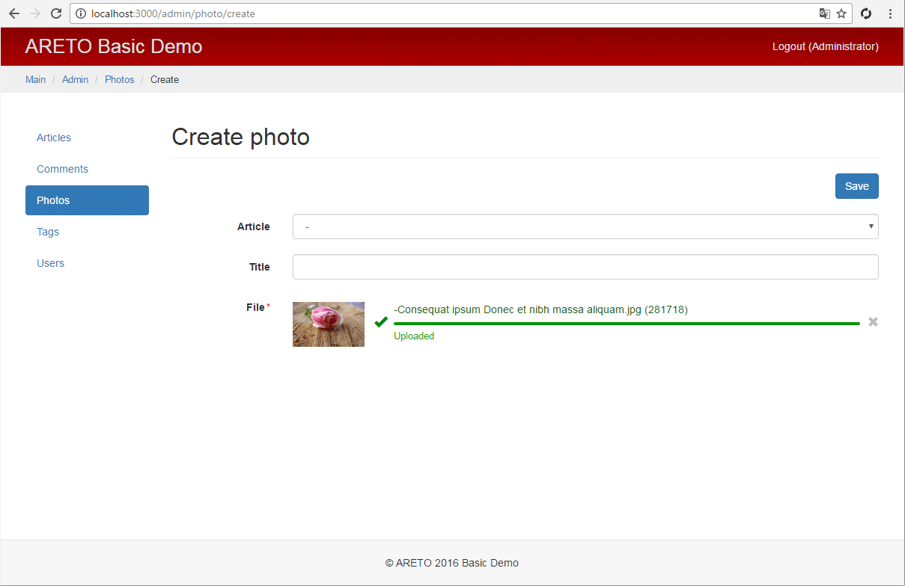
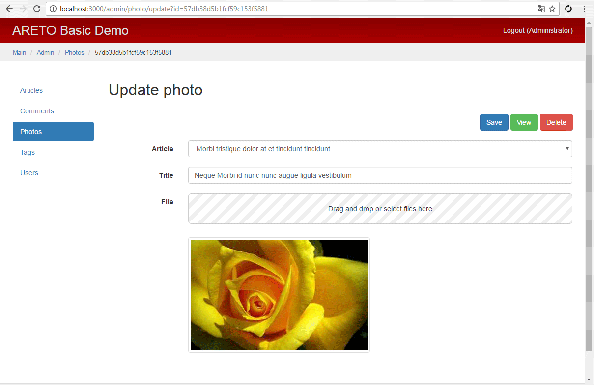

Контроллер фотографий
Класс PhotoController определяет контроллер модели фото.
module/admin/controllers/PhotoController.js

Метод actionCreate создает модель фотографии.
Массив асинхронных методов async.series получает данные для списка выбора статьи
Article.findToSelect, к которой может быть привязано фото.
module/admin/controllers/PhotoController.js

Метод actionView вызывает родительский метод для загрузки необходимых отношений.
module/admin/controllers/PhotoController.js

Метод actionUpload сохраняет загруженный файл на сервер.
Если файл проходит проверку, то из него создается модель фотографии, не привязанная к статье.
module/admin/controllers/PhotoController.js
Метод actionAssignMain устанавливает фото как главное в статье.
Сохранение статьи осуществляется через метод forceSave, который не производит валидацию модели.
Если у фотографии нет связанной статьи, то устанавливается flash-сообщение об ощибке
(одноразовое сообщение в пользовательской сессии) и идет переадресация на страницу просмотра фото.
module/admin/controllers/PhotoController.js